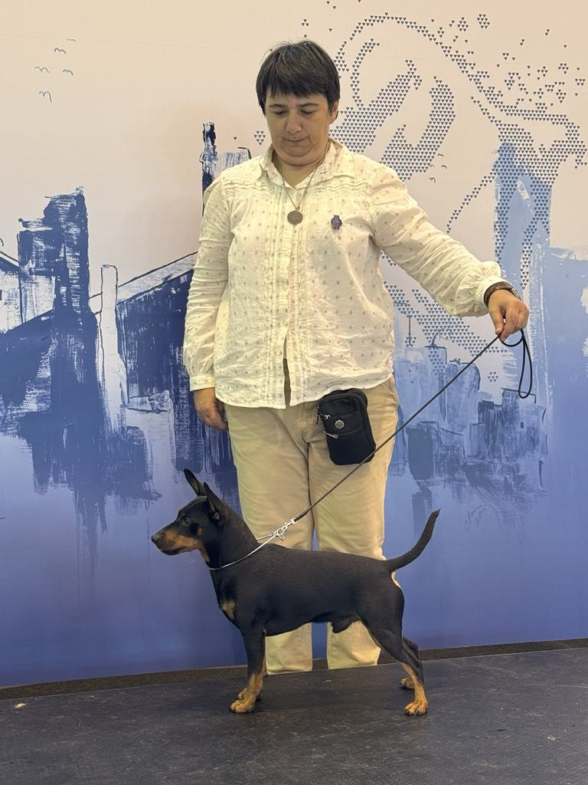

Нашата история
За Pinscher Land
Развъдник и Партньори
Pinscher Land е повече от развъдник – това е философия за отговорно отглеждане на кучета. Развъдникът VON T&IA (FCI 49/99) е основан от Dr. Tania Getova с една ясна цел: да съхрани и усъвършенства породата миниатюрен пинчер в България и по света.
За над десетилетие ние изградихме кръвна линия, която обединява перфектния екстериор по FCI стандарта, желязно здраве и жив, стабилен характер. Всяко наше куче е доказателство, че страстта и науката могат да работят заедно.
Работим в тясно сътрудничество с ветеринарни специалисти, международни съдии и водещи развъдници в Европа, за да гарантираме, че всяко ново поколение е стъпка напред.

Стандарти без компромис
Четири принципа, които водят всяко наше решение – от селекцията на родителите до предаването на кученцето в новия дом.
Генетика
Селекция на родители с доказани кръвни линии, DNA тестове и предварителни здравни изследвания.
Здраве
100% ветеринарни прегледи, пълна ваксинация, обезпаразитяване и микрочип за всяко кученце.
Екстериор
Строго придържане към FCI стандарта. Кучета, готови за ринга и живот на диван.
Темперамент
Ранна социализация в домашна среда – самоуверени, балансирани и любящи кучета за цял живот.
Хронология на успеха
Един поглед към ключовите моменти и важните етапи, които изградиха историята на Pinscher Land.
Раждането на VON T&IA
Dr. Tania Getova получава своята FCI регистрация 49/99 – началото на официалната развъдническа дейност.
Kimon & Kennel Chernaya Liniya
Пристигат кучетата-основатели, върху които се гради днешната кръвна линия. Първите шампионски титли.
Международно признание
Кучета от развъдника печелят BIS и BOB на международни изложби. Партньорства с водещи европейски развъдници.
25 шампионски титли
Празнуваме преминаването на 25 шампионски титли и над 100 предадени щастливи кученца.
Ново поколение
Раждането на кучилото от Trenertg Avatares El Oso Von T & Ia и Kimon Von Masterhof – 7 нови звезди за международните рингове.
Развъдници
Утвърдени развъдници от България, Сърбия, Украйна и Русия, обединени от страстта към породата Миниатюрен Пинчер.
FCI Регистрация: 49/99
Адрес: София, бул. Симеоновско шосе 165
Телефон: +359 898 734043
Email: trenertg@gmail.com
Уеб сайт: https://pinscher.land
URL: https://mp.dogpedigree.net/ru/kennel/111
Телефон: +7 926 7329373
Имейл: kennel@jokershow.ru
Уеб сайт: https://jokershow.ru
Посетете нашия развъдник
Организираме индивидуални срещи по предварителна уговорка. Заповядайте да се запознаете с нашите кучета лично.
Уговорете посещение